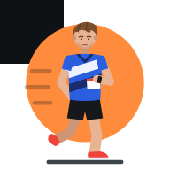

Mølle for iPhone og iPad
Appen legges på hjemskjermen fra Safari og fungerer da som en vanlig app.
Du ser ut til å bruke en annen nettleser enn Safari. Kopier adressen og åpne den i Safari, ellers får du ikke lagt appen på hjemskjermen.
Slik gjør du det
- 1Trykk på knappen under. Appen åpnes i Safari.
- 2Trykk på Del-knappen nederst på skjermen (øverst på iPad).
- 3Bla ned og velg Legg til på Hjem-skjerm, og trykk Legg til.
- 4Åpne Mølle fra hjemskjermen.
Safari kan ikke koble til pulsbelte. Bruk heller den gratis nettleseren Bluefy, som kan det:
- 1Hent Bluefy fra App Store.
- 2Kopier adressen under, åpne Bluefy og lim den inn i adressefeltet.
- 3Trykk «Koble til» ved Pulsmåler og velg beltet ditt. Beltet må sende over Bluetooth.
- 4Neste gang finner du appen under bokmerker eller historikk i Bluefy.
Godt å vite
Økter og innstillinger lagres i nettleseren. Bruker du både Safari og Bluefy, har hver sine egne hurtigvalg og historikk.
Zwift-fotpoden finnes bare i Android-appen.
Bytter du til en annen app midt i økta, stopper pipene til du er tilbake. Tid og distanse blir likevel riktig.